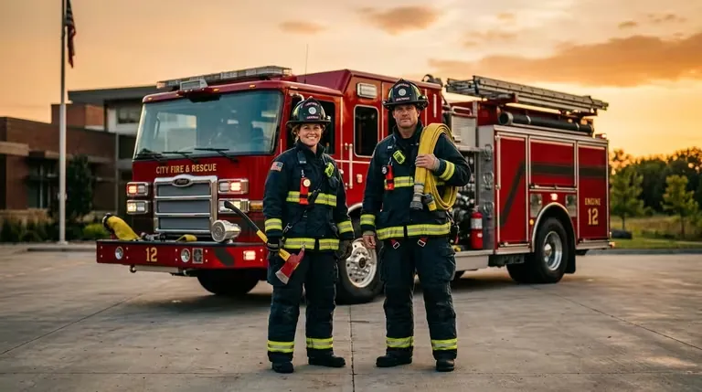

<section class="ol-art-section">
<h2>BOMBERO.MX: el distribuidor que el mercado de bomberos necesitaba</h2>
<p>
Los cuerpos de bomberos en México —municipales, voluntarios, industriales y aeroportuarios— enfrentan un reto que pocos proveedores resuelven bien: necesitan equipo de protección personal certificado bajo estándares NFPA internacionales, disponible en México, con soporte técnico en español y servicio postventa real. La importación directa es compleja, costosa y lenta. Los distribuidores generalistas de seguridad industrial generalmente no tienen la especialización técnica en equipos para bomberos.
</p>
<p>
BOMBERO.MX nació para cubrir exactamente esa brecha. Como distribuidor multi-marca especializado en EPP para bomberos, concentra en un solo canal las marcas más reconocidas del sector: MSA Safety, Honeywell, Globe Manufacturing y Bullard, además de líneas complementarias de herramientas, iluminación de emergencia y equipamiento de rescate técnico.
</p>
<p>
El modelo multi-marca es deliberado. Los cuerpos de bomberos tienen preferencias específicas por línea de equipo: algunos confían en MSA para sus equipos de respiración autónoma (ERA), otros prefieren Globe para sus trajes estructurales, otros tienen historiales de uso con Bullard en cascos. BOMBERO.MX permite que cada unidad seleccione la marca que conoce y en la que confía, sin tener que importar directamente.
</p>
</section>
<section class="ol-art-section">
<h2>El marco NFPA para equipo de protección personal de bomberos</h2>
<p>
A diferencia del equipo contra incendios para edificios —regido principalmente por NOM en México— el equipo de protección personal para bomberos se rige en la práctica por las normas NFPA, incluso en México. Esto ocurre porque las NOM nacionales para EPP de bomberos no tienen el nivel de detalle técnico de las NFPA, y porque las aseguradoras de municipios y corporativos frecuentemente exigen NFPA en sus plazas de cumplimiento.
</p>
<div style="margin: 1rem 0 1.5rem;">
<span class="ol-art-norm-badge">NFPA 1970</span>
<span class="ol-art-norm-badge">NFPA 1970</span>
<span class="ol-art-norm-badge">NFPA 1970</span>
<span class="ol-art-norm-badge">NFPA 2500</span>
<span class="ol-art-norm-badge">NFPA 1850</span>
<span class="ol-art-norm-badge">NFPA 1950</span>
</div>
<h3>NFPA 1970 — Trajes de protección estructural</h3>
<p>
La norma más importante para el EPP de bombero estructural. Define los requisitos de resistencia térmica, resistencia a la llama, impermeabilidad, resistencia química y ergonomía para trajes de tres capas (exterior, barrera de humedad e interior térmico). Todo traje estructural certificado NFPA 1970 lleva la etiqueta de un laboratorio acreditado (UL, Intertek, etc.) que verificó su cumplimiento.
</p>
<h3>NFPA 1970 — Equipos de Respiración Autónoma (ERA)</h3>
<p>
Regula los aparatos de respiración autónoma (SCBA por sus siglas en inglés, ERA en español): el cilindro de aire comprimido, la válvula de demanda, la máscara facial y el arnes de sujeción. Los ERA de MSA, Scott (Honeywell) y otros fabricantes representados por BOMBERO.MX son certificados bajo NFPA 1970 / EN 137.
</p>
<h3>NFPA 1970 — Dispositivos de alarma de actividad personal (PASS)</h3>
<p>
Los dispositivos PASS emiten una alarma sonora y visual cuando el bombero permanece inmóvil por más de 30 segundos, indicando que puede estar inconsciente o atrapado. Son obligatorios como componente del ERA. BOMBERO.MX distribuye dispositivos PASS integrados con los ERA y como unidades independientes.
</p>
<h3>NFPA 2500 — Equipos de rescate personal y cuerdas</h3>
<p>
Regula las cuerdas y equipos de rescate para bomberos: cuerdas de escape, mosquetones, descendedores. BOMBERO.MX incluye en su catálogo equipamiento de rescate técnico certificado bajo esta norma.
</p>
<h3>NFPA 1850 — Selección, cuidado y mantenimiento de EPP</h3>
<p>
Esta norma complementaria define cómo debe mantenerse, inspeccionarse y darse de baja el EPP de bombero. BOMBERO.MX ofrece capacitación bajo NFPA 1850 para los jefes de material de los cuerpos de bomberos que abastece.
</p>
<h3>NFPA 1950 — Ropa de protección para combate de incendios silvestres (wildland)</h3>
<p>
Para brigadas forestales y cuerpos de bomberos con operaciones en incendios de vegetación, NFPA 1950 define los requisitos del equipo de protección. BOMBERO.MX distribuye pantalones y camisas Nomex certificados para este tipo de intervención.
</p>
</section>
<section class="ol-art-section">
<h2>Las marcas del catálogo BOMBERO.MX</h2>
<p>
El valor de BOMBERO.MX como distribuidor multi-marca reside en la calidad y reconocimiento internacional de las marcas que representa. Cada marca tiene una posición clara en el mercado global de EPP para bomberos:
</p>
<div class="ol-brand-card">
<h4>MSA Safety</h4>
<p><strong>Origen:</strong> Pittsburgh, Pennsylvania, EUA — fundada en 1914.</p>
<p><strong>Especialidad:</strong> Equipos de protección respiratoria (ERA), detectores de gas, cascos de seguridad industrial y para bomberos.</p>
<p><strong>Productos destacados:</strong> ERA G1 SCBA (uno de los ERA más avanzados del mercado), casco Cairns 1010 y 1836, detectores de gas portátiles Altair.</p>
<p><strong>Certificación:</strong> NFPA 1970, cap. 15–19 (ERA), NFPA 1970, cap. 5–9 (cascos), certificados UL/NIOSH.</p>
<p><strong>Por qué la eligen los bomberos:</strong> La G1 SCBA tiene una de las menores tasas de falla en servicio y una interfaz de usuario intuitiva. Los cascos Cairns son el estándar de facto en muchos cuerpos de bomberos de América del Norte.</p>
</div>
<div class="ol-brand-card">
<h4>Honeywell / Scott Aviation (Respiración)</h4>
<p><strong>Origen:</strong> Charlotte, North Carolina, EUA — Scott Safety adquirido por Honeywell en 2017.</p>
<p><strong>Especialidad:</strong> Aparatos de respiración autónoma, máscaras faciales, detectores de gas, equipos para espacios confinados.</p>
<p><strong>Productos destacados:</strong> ERA Scott Air-Pak X3 Pro, máscaras AV-3000, detectores de gas BW Clip.</p>
<p><strong>Certificación:</strong> NFPA 1970, NIOSH, EN 137, CE.</p>
<p><strong>Por qué la eligen los bomberos:</strong> La gama Scott es ampliamente conocida en México, con décadas de uso en cuerpos de bomberos municipales del país. La amplia base instalada facilita la compatibilidad de refacciones entre unidades.</p>
</div>
<div class="ol-brand-card">
<h4>Globe Manufacturing</h4>
<p><strong>Origen:</strong> Pittsfield, New Hampshire, EUA — fundada en 1887.</p>
<p><strong>Especialidad:</strong> Trajes de bombero estructural y de proximidad. Manufacturer exclusivo de EPP para bomberos.</p>
<p><strong>Productos destacados:</strong> Trajes estructurales G-Xtreme, G-Supreme, Supreme AT; trajes de proximidad para aeropuertos y petroquímica.</p>
<p><strong>Certificación:</strong> NFPA 1970 (estructural), NFPA 1970 proximidad, NFPA 1950 (wildland).</p>
<p><strong>Por qué la eligen los bomberos:</strong> Globe tiene reputación de trajes con excelente ajuste ergonómico y durabilidad superior. Sus trajes son usados por cuerpos de bomberos que priorizan la comodidad del bombero como factor de seguridad — un traje que no se mueve bien con el bombero reduce su capacidad de respuesta.</p>
</div>
<div class="ol-brand-card">
<h4>Bullard</h4>
<p><strong>Origen:</strong> Cynthiana, Kentucky, EUA — fundada en 1898.</p>
<p><strong>Especialidad:</strong> Cascos de protección para bomberos, cámaras termográficas para bomberos, ERA.</p>
<p><strong>Productos destacados:</strong> Casco USTERM (estructural), FH2100 (termográfico), ERA Stentor.</p>
<p><strong>Certificación:</strong> NFPA 1970, cap. 5–9 (cascos), NFPA 1970, cap. 15–19 (ERA), UL Listed.</p>
<p><strong>Por qué la eligen los bomberos:</strong> Las cámaras termográficas de Bullard son herramienta crítica para búsqueda y rescate en condiciones de visibilidad cero. El casco FH2100 integra la cámara directamente al casco, dejando las manos libres durante operaciones de rescate.</p>
</div>
</section>
<section class="ol-art-section">
<figure class="ol-art-featured inline">
<picture>
<source srcset="../../img/equipos-contra-incendios/equipo-bombero-traje-estructural-scba-01.avif" type="image/avif">
<img src="../../img/equipos-contra-incendios/equipo-bombero-traje-estructural-scba-01.webp" alt="Equipo de respiración autónoma SCBA y traje estructural para bomberos certificado NFPA" loading="lazy" decoding="async" width="768" height="429">
</picture>
<figcaption class="ol-art-featured-caption">Equipo de respiración autónoma (SCBA) y traje estructural certificado NFPA.</figcaption>
</figure>
<h2>El catálogo por línea de EPP</h2>
<p>
El equipo de un bombero estructural completo comprende múltiples categorías de EPP, cada una con su propia normativa NFPA. BOMBERO.MX cubre todas estas categorías:
</p>
<h3>Trajes estructurales (turnout gear)</h3>
<p>
Los trajes estructurales son el equipo de mayor costo y mayor criticidad del EPP de bombero. Un traje completo incluye casaca (chaqueta), pantalón, guantes y botas. El sistema de tres capas —exterior Nomex/Kevlar, barrera de humedad Gore-Tex o equivalente, y liner térmico— es el estándar NFPA 1970. BOMBERO.MX distribuye trajes Globe en configuraciones para cuerpos con distinto perfil de riesgo.
</p>
<h3>Cascos para bombero</h3>
<p>
Los cascos de bombero siguen el diseño tradicional norteamericano (tipo "casco americano" con ala trasera protectora) o el diseño europeo (tipo "casco integral"). BOMBERO.MX distribuye ambos estilos, con los modelos Cairns (MSA) para el perfil norteamericano y modelos Bullard USTERM para aplicaciones estructurales de alta temperatura.
</p>
<h3>Equipos de Respiración Autónoma (ERA)</h3>
<p>
El ERA es el equipo de protección más tecnológicamente complejo del EPP de bombero. Un ERA moderno incluye:
</p>
<ul>
<li>Cilindro de aire comprimido (30 o 45 minutos de autonomía típicamente)</li>
<li>Válvula de demanda y regulador de presión</li>
<li>Máscara facial panorámica (visión completa) con sello facial de silicona</li>
<li>Arnés de espalda ergonómico con distribución de peso</li>
<li>Dispositivo PASS integrado (alarma de inmobilidad)</li>
<li>Manómetro de presión y alarma de baja presión</li>
<li>Sistema de comunicación de voz (en modelos avanzados)</li>
</ul>
<h3>Guantes para bombero</h3>
<p>
Los guantes NFPA 1970 combinan protección térmica con destreza manual. BOMBERO.MX distribuye guantes en piel de cabra, piel de cerdo y materiales sintéticos de alta resistencia térmica, en versiones para trabajo estructural, ataque inicial y proximidad. La selección de guante tiene un impacto directo en la capacidad del bombero de operar válvulas, arneses y herramientas bajo condiciones de incendio.
</p>
<h3>Botas para bombero</h3>
<p>
Las botas de bombero son certificadas bajo NFPA 1970 y deben resistir la penetración de calor desde el suelo (suelas resistentes a temperatura), objetos punzantes (plantilla de acero), y proporcionar sujeción del tobillo para trabajo en terrenos irregulares. BOMBERO.MX distribuye botas de cuero y de hule en los estilos de jaladera y de agujeta.
</p>
<h3>Cámaras termográficas</h3>
<p>
Las cámaras termográficas son hoy equipo estándar en operaciones de rescate y control de incendio. Permiten al bombero ver a través del humo detectando diferencias de temperatura, identificar víctimas atrapadas, localizar el punto de mayor calor del incendio y detectar extensión de llamas ocultas detrás de paredes. BOMBERO.MX distribuye las cámaras Bullard, incluyendo el modelo de casco integrado.
</p>
<h3>Herramientas de rescate técnico</h3>
<p>
Cuerdas certificadas NFPA 2500, descendedores, ascendedores, mosquetones y equipamiento para rescate en altura y espacios confinados completan el catálogo de rescate técnico de BOMBERO.MX.
</p>
<h3>Equipo para wildland (incendios forestales)</h3>
<p>
Para brigadas forestales y brigadas municipales con intervención en incendios de vegetación, BOMBERO.MX distribuye pantalones y camisas Nomex certificados NFPA 1950, mochitas de agua (water pack), herramientas de línea de fuego (pulaski, hazel hoe, mcleod) y cascos de tipo wildland.
</p>
</section>
<section class="ol-art-section">
<h2>Clientes típicos de BOMBERO.MX</h2>
<p>
El mercado de EPP para bomberos en México está segmentado en varios tipos de clientes, cada uno con características distintas:
</p>
<h3>Cuerpos de bomberos municipales</h3>
<p>
Los cuerpos de bomberos municipales en México —de las grandes ciudades a los municipios en proceso de profesionalización— son el cliente de mayor volumen de BOMBERO.MX. Sus compras son generalmente por licitación o convocatoria, con especificaciones técnicas basadas en normas NFPA. La capacidad de BOMBERO.MX de suministrar equipo certificado con documentación técnica completa en español es crítica para este segmento.
</p>
<h3>Cuerpos de bomberos industriales (ERE)</h3>
<p>
Las grandes plantas industriales —petroquímicas, refinerías, terminales de almacenamiento, plantas automotrices— tienen sus propias brigadas de respuesta a emergencias (ERE). Estas brigadas tienen presupuestos de equipamiento superiores a los cuerpos municipales y exigen equipo de las más altas especificaciones: ERA de mayor autonomía, trajes de proximidad, cámaras termográficas. BOMBERO.MX atiende a este segmento con propuestas técnicas detalladas.
</p>
<h3>Cuerpos de bomberos aeroportuarios (ARFF)</h3>
<p>
Los equipos de rescate y combate de incendios en aeropuertos (ARFF — Aircraft Rescue and Firefighting) tienen requerimientos específicos definidos por NFPA 402 y OACI: trajes de proximidad, equipos de espuma, ERA de alta autonomía. BOMBERO.MX distribuye equipo certificado para el perfil ARFF.
</p>
<h3>Brigadas de bomberos voluntarios</h3>
<p>
México tiene una tradición sólida de bomberos voluntarios, organizados en asociaciones estatales y nacionales. Las brigadas voluntarias tienen presupuestos más limitados y frecuentemente buscan opciones de equipamiento que balanceen certificación NFPA con costo de adquisición. BOMBERO.MX puede recomendar configuraciones de EPP que cumplan NFPA 1970 con distintos niveles de inversión.
</p>
<h3>Instituciones de capacitación y academias</h3>
<p>
Las academias de bomberos —institucionales y privadas— son clientes de BOMBERO.MX para equipamiento de entrenamiento: trajes de protección para prácticas de extinción, ERA para entrenamiento en oscuridad y humo, maniquís de rescate y equipamiento de simulación.
</p>
</section>
<section class="ol-art-section">
<h2>El modelo multi-marca: por qué es la propuesta correcta para el mercado mexicano</h2>
<p>
En el mercado de EPP para bomberos, un distribuidor mono-marca tiene una desventaja estructural: si la marca que distribuye tiene un producto débil en alguna categoría, el cliente tiene que comprarlo de todos modos o ir a otro proveedor. El distribuidor multi-marca elimina este problema: si MSA tiene el mejor ERA pero Globe tiene el mejor traje, el cuerpo de bomberos puede tener ambos de un solo proveedor.
</p>
<p>
En México, esta ventaja es especialmente relevante porque muchos cuerpos de bomberos ya tienen historial de uso con marcas específicas y no pueden o no quieren cambiar el ERA con el que entrenan sus operadores, pero sí quieren modernizar sus trajes o cascos. BOMBERO.MX permite esa flexibilidad.
</p>
<p>
La otra ventaja del modelo multi-marca es la capacidad de comparación técnica objetiva. BOMBERO.MX puede presentar a un cliente las especificaciones de ERA de MSA vs. Honeywell con transparencia, ayudando a la decisión técnica sin el sesgo de un distribuidor que solo tiene una opción disponible.
</p>
</section>
<section class="ol-art-section">
<h2>Tabla de referencia NFPA para EPP de bombero</h2>
<table class="ol-art-spec-table">
<thead>
<tr>
<th>Categoría de EPP</th>
<th>Norma NFPA</th>
<th>Marcas disponibles en BOMBERO.MX</th>
<th>Aplicación</th>
</tr>
</thead>
<tbody>
<tr>
<td>Traje estructural completo</td>
<td>NFPA 1970</td>
<td>Globe Manufacturing</td>
<td>Estructural, rescate urbano</td>
</tr>
<tr>
<td>Casco estructural</td>
<td>NFPA 1970</td>
<td>MSA (Cairns), Bullard</td>
<td>Estructural, rescate técnico</td>
</tr>
<tr>
<td>Guantes estructurales</td>
<td>NFPA 1970</td>
<td>Globe, líneas complementarias</td>
<td>Estructural</td>
</tr>
<tr>
<td>Botas estructurales</td>
<td>NFPA 1970</td>
<td>Líneas especializadas</td>
<td>Estructural</td>
</tr>
<tr>
<td>ERA (SCBA)</td>
<td>NFPA 1970</td>
<td>MSA (G1), Honeywell (Scott Air-Pak)</td>
<td>Estructural, HAZMAT, rescate</td>
</tr>
<tr>
<td>Dispositivo PASS</td>
<td>NFPA 1970</td>
<td>Integrado con ERA MSA / Honeywell</td>
<td>Seguridad operativa</td>
</tr>
<tr>
<td>Cuerdas y rescate</td>
<td>NFPA 2500</td>
<td>Líneas especializadas</td>
<td>Rescate técnico, altura</td>
</tr>
<tr>
<td>Cámara termográfica</td>
<td>UL / NFPA referencia</td>
<td>Bullard (TXS, Eclipse)</td>
<td>Búsqueda y rescate</td>
</tr>
<tr>
<td>Traje wildland</td>
<td>NFPA 1950</td>
<td>Globe, complementarias</td>
<td>Incendios forestales</td>
</tr>
<tr>
<td>Traje de proximidad</td>
<td>NFPA 1970 (proximidad)</td>
<td>Globe</td>
<td>ARFF, petroquímica</td>
</tr>
</tbody>
</table>
</section>
<div class="ol-art-contact-card">
<h3>Contacto BOMBERO.MX</h3>
<div class="ol-art-contact-grid">
<div class="ol-art-contact-item">
<strong>Modelo</strong>
<span>Distribuidor multi-marca NFPA para bomberos</span>
</div>
<div class="ol-art-contact-item">
<strong>Cobertura</strong>
<span>República Mexicana</span>
</div>
<div class="ol-art-contact-item">
<strong>Sitio web</strong>
<a href="https://bombero.mx" target="_blank" rel="noopener">bombero.mx</a>
</div>
<div class="ol-art-contact-item">
<strong>Marcas</strong>
<span>MSA Safety · Honeywell · Globe Manufacturing · Bullard</span>
</div>
<div class="ol-art-contact-item">
<strong>Normas</strong>
<span>NFPA 1970 · 2500 · 1850 · 1950</span>
</div>
<div class="ol-art-contact-item">
<strong>Clientes</strong>
<span>Municipales · Industriales · ARFF · Voluntarios · Academias</span>
</div>
</div>
</div>
<section class="ol-art-section">
<h2>Por qué el EPP correcto es una cuestión de vida o muerte — y por qué importa el distribuidor</h2>
<p>
A diferencia de la mayoría del equipo de seguridad industrial, el EPP de bombero opera en condiciones límite donde el margen de error es cero. Un traje que no cumple NFPA 1970 puede permitir que el calor penetre antes de que el bombero pueda salir del entorno peligroso. Un ERA que falla dentro de un edificio en llamas pone la vida del bombero en riesgo inmediato. Un casco que no sella correctamente expone al bombero a temperaturas y gases de combustión.
</p>
<p>
Esto significa que el distribuidor de EPP para bomberos no puede ser seleccionado únicamente por precio. La certificación verificable de cada producto, el soporte técnico real del distribuidor, la disponibilidad de refacciones y el servicio de mantenimiento postventa son factores que impactan directamente en la seguridad de los bomberos que usan el equipo.
</p>
<p>
BOMBERO.MX ha construido su propuesta de valor sobre estos factores: marcas de reconocimiento mundial, certificaciones NFPA verificables para cada producto, y la capacidad de acompañar a los cuerpos de bomberos en el ciclo completo del equipo — desde la especificación inicial hasta el retiro del servicio bajo NFPA 1850.
</p>
</section>
<div class="ol-art-share">
<span class="ol-art-share-label">Compartir artículo:</span>
<a href="https://twitter.com/intent/tweet?url=https://origenlab.com/blog/bombero-mx-equipo-personal-proteccion-bomberos/&text=BOMBERO.MX:+EPP+certificado+NFPA+para+bomberos+en+México" target="_blank" rel="noopener" class="ol-art-share-btn" aria-label="Compartir en Twitter"><svg width="18" height="18" viewBox="0 0 24 24" fill="currentColor" aria-hidden="true" focusable="false"><path d="M18.244 2.25h3.308l-7.227 8.26 8.502 11.24H16.17l-5.214-6.817L4.99 21.75H1.68l7.73-8.835L1.254 2.25H8.08l4.713 6.231zm-1.161 17.52h1.833L7.084 4.126H5.117z"/></svg>Twitter / X</a>
<a href="https://www.linkedin.com/sharing/share-offsite/?url=https://origenlab.com/blog/bombero-mx-equipo-personal-proteccion-bomberos/" target="_blank" rel="noopener" class="ol-art-share-btn" aria-label="Compartir en LinkedIn"><svg width="18" height="18" viewBox="0 0 24 24" fill="currentColor" aria-hidden="true" focusable="false"><path d="M20.447 20.452h-3.554v-5.569c0-1.328-.027-3.037-1.852-3.037-1.853 0-2.136 1.445-2.136 2.939v5.667H9.351V9h3.414v1.561h.046c.477-.9 1.637-1.85 3.37-1.85 3.601 0 4.267 2.37 4.267 5.455v6.286zM5.337 7.433c-1.144 0-2.063-.926-2.063-2.065 0-1.138.92-2.063 2.063-2.063 1.14 0 2.064.925 2.064 2.063 0 1.139-.925 2.065-2.064 2.065zm1.782 13.019H3.555V9h3.564v11.452zM22.225 0H1.771C.792 0 0 .774 0 1.729v20.542C0 23.227.792 24 1.771 24h20.451C23.2 24 24 23.227 24 22.271V1.729C24 .774 23.2 0 22.222 0h.003z"/></svg>LinkedIn</a>
</div>
<div class="ol-art-author-card">
<div class="ol-art-author-avatar" aria-hidden="true">OL</div>
<div class="ol-art-author-info"><strong class="ol-art-author-name">OrigenLab Editorial</strong><p class="ol-art-author-bio">Agencia mexicana de desarrollo web para empresas de seguridad industrial, distribuidores técnicos y empresas B2B.</p></div>
</div>